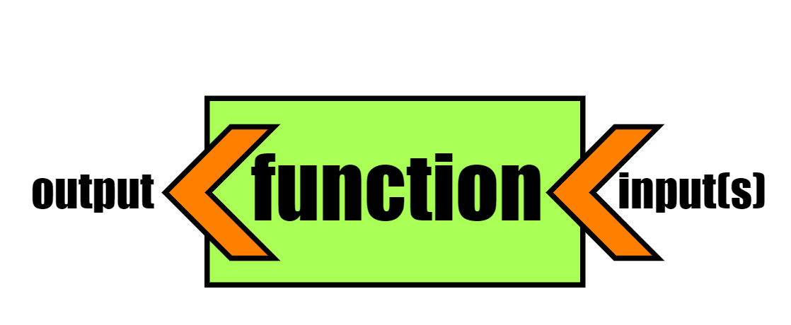
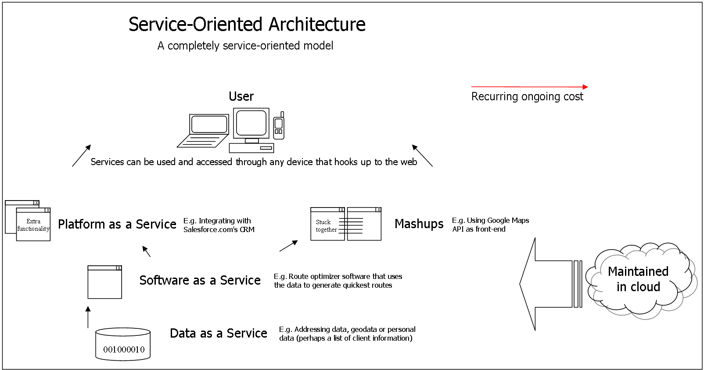
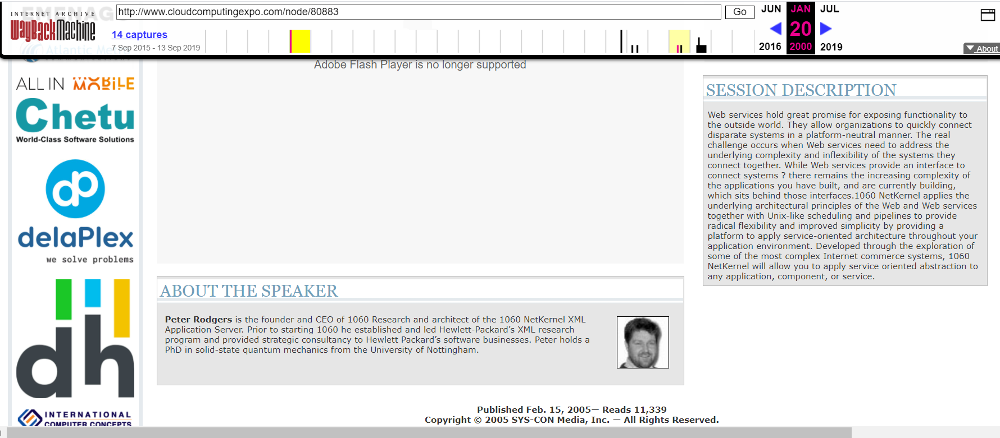

Web services[WWW == distributed app execution platform!] |
That his document-serving hypertext mechanism would turn into the most distributed software execution architecture ever!
EVERY useful application "gets things done", via a collection of function or method calls.
A function is a VERY USEFUL abstraction:

Usually, in its own application! With Java (or sockets in general), on remote machines (RMI) as well.
Usually, via shared memory, inter-process communication (eg. BSP, RPC (eg. COM, CORBA))...
It's SIGNATURE (inputs, output)!
A function's signature ('public interface') serves as a 'contract' between its creator and users.
In other words, the { } 'body' of a function, ie. HOW it does what it does (uses what computation to transform inputs to output) is not relevant, or accessible, to its users, ie. they shouldn't need to know or care; it's ALL about what the function needs (inputs) and what it returns (output).
For example, in C/C++, these signatures are what we place, in a .h (header) file; the .c or .cpp file "merely" implements the interface declared in the .h! To our users, we'd supply the .h in source form (so they can #include it in their application that makes calls declared in our interface), and the .c/.cpp, in compiled form, ie. as a DLL/DSO (.dll or .so file).
THAT is what a web service ("API") is.
Web services make for the most heterogenous, distributed form of computing, 'mostly' running on web servers - it is all based on inputs and outputs, 'glued together' by the app that uses the services.
An 'API', such as the TMDB API, is accessed over the web, from a simple browser based 'GET' URL request (function argument), and produces JSON data response (function return). Cool!
This slide, and all of what follows, is NOT part of the midterm content :)
SOA binds to multiple services:

BUT - traditionally, the term SOA means this - an architecture for a MONOLITHIC application, that is built around offering and consuming services. In other words, it's old-fashioned monolithic architecture (enterprise-wise, reusing components and frameworks and file formats and protocols...), that uses service interfaces in DBC fashion. Today's web apps, though they are service-based, are NOT SOA apps in this 'monolithic' sense (today's services are not tightly coupled).
A client requesting a service asks the server for a service, described via WSDL. Communication is done via the requests and responses described in WSDL, and actual message/data transport occurs via 'SOAP' format (protocol, which can also include binary data being exchanged via base64 encoding, for example).
SOAP requests and responses are in XML.
SOAP came from COM -> DCOM, CORBA, XML-RPC.
So is rather rigid - reqs must be in XML, specifically constructed as per the WSDL services description ('contract').
An entire service (collection of elementary services) described in terms of XML (or even JSON) is NOT RESTful, on account of the 'schema' used in such a description.
Need(ed) a lightweight alternative!
We call each independent/standalone 'piece' (a REST API call) of a modern 'web app', a 'microservice' - 'micro' because it is not part of a larger monolithic application.
Here is IBM's explanation of a microservice, and here is what Martin Fowler has to say about them.
A blast from the past (2005!):

The evolution has been: monolithic apps -> older web-based services ("heavy micro") -> ("light") microservices.
Modern APIs (eg TMDB) are LOOSE, SELF-CONTAINED, URL-BASED requests, who responses can be in XML, JSON, .csv, plaintext, html, JSONP (function call to the client)... NO rigid exchange format, no XML-only requirement!! THAT is a what 'RESTful' API means (offers)... It's a SIMPLE way to CALL a 'server function', INDEPENDENT of any functions before/after, and get back a self-contained response - there is NO "state" stored, related to the req/resp.
The client does a simple http GET/POST(/PUT/DELETE) request, the server responds, both "move on".
Because it's so 'lightweight' (simple self-contained URLs w/ appended query strings is as barebones as a distributed call gets!), REST is perfect for IoT applications (where an embedded server runs on a small piece of hardware and responds with device-collected data, eg. in a weather station), to run in a 'serverless' (ie. cloud-deployed) environment...
We call each independent/standalone 'piece' (a URL-based REST API call), a 'microservice' - 'micro' because it is not part of a larger monolithic application.
Here is IBM's explanation of a microservice, and here is what Martin Fowler (of 'code refactoring' fame) has to say about them.
REST is a way of thinking about EVERYTHING a server can serve (wrt a service), as a 'resource' - with a unique resource ID that the server can keep track of, eg via 'routing'!
Specifically, to qualify as 'REST', THESE need to be true, as per Roy Fielding, who came up with REST!
Rather than upload ('deploy') our requirements.txt and app.py etc. to a server and have it do the pip install etc., what if we packaged up our entire 'venv' ENVIRONMENT (code, plus libraries - ready to run!), into a portable format? A container is just that :)
Docker, Docker Swarm, Kubernetes [pilot; 'Kube'] are examples of containers.
Modern app dev looks like this:
Result: a cloud-y, containerized, microservice architecture.
For app execution, THIS IS AS FLEXIBLE AS IT GETS!
We can flexibly 'integrate' (micro)services, to build cloud-based apps... Eg. https://app.datafire.io/, https://app.datafire.io/integrations, https://app.datafire.io/projects/sparkling-swan/overview/settings
Here are many API goodies:
Here is a simple usage of NYT's books API...
Browsing the above resources tells you what a powerful idea (APIs, esp. REST APIs) this is!
Here is more...